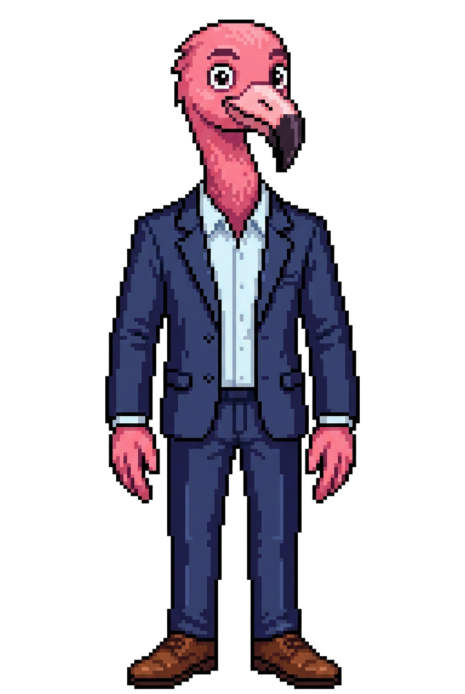

wertkurs · Open Design Preview — Brand Vocabulary
Diese Preview-Seite zeigt die volle wertkurs-Marken-Vokabel (Wortmarke, Werner, Founder-Emoticons, Spektrum/80s-Retro, Trust-Badge, Sticker- & Grain-Flächen). Sie ist bewusst vom schema-neutralen components.html getrennt: hier dürfen Marken-Assets und Spektrum-Motive eingesetzt werden, während das Fixture rein auf dem Token-Kontrakt bleibt.
wertkurs

Werner — der bunte Vogel der Finanzbranche — lebt auf dem mintgrünen Feld.
Emotionale Beats tragen die Pixel-Gesichter & Werner — nicht Unicode-Emoji.
Harte Ink-Kontur + Offset-Schatten — die Pixel/Retro-Variante der Karte.